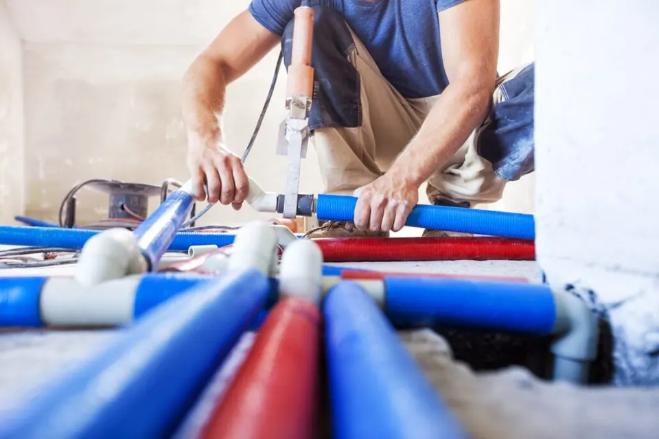

İstanbul Avrupa Yakası · 25 ilçe
İstanbul Avrupa Yakası Su Tesisatçısı
Musluk, batarya, vana, boru patlağı ve tesisat yenileme işleri için usta gönderiyoruz. 7/24 hizmet veriyoruz; ekiplerimiz adrese ortalama 30 dakikada ulaşıyor.

- 7/24 hizmetGece, hafta sonu ve bayramda da arayabilirsiniz.
- Ortalama 30 dakikaEkiplerimiz Avrupa yakasında adrese ortalama 30 dakikada ulaşıyor.
- 25 ilçeAvrupa yakasının tüm ilçelerine servis veriyoruz.
- Fiyat işten önceUsta yerinde baktıktan sonra, işe başlamadan fiyatı söylüyor.
Neler yapıyoruz?
Boru patlağı ve acil müdahale
Patlayan ya da çatlayan boruda önce suyu kesip hasarı durduruyor, sonra kalıcı onarımı yapıyoruz.
Musluk ve batarya
Damlatan musluk, değişecek batarya, ankastre ya da mutfak bataryası montajı.
Vana ve rakor
Ana vana, kombi altı vanaları, kollektör vanaları ve sızdıran rakor değişimi.
Klozet ve rezervuar
Su kaçıran rezervuar takımı, gömme rezervuar arızası, klozet montajı.
Tesisat yenileme
Paslanan galvaniz hattın plastik esaslı borularla yenilenmesi, daire içi tesisat değişimi.
Basınç sorunları
Düşük basınç, hidrofor ve basınç düşürücü ayarı, tıkanan filtre ve perlatör temizliği.
Hangi durumlarda aramalısınız?
- Bir yerden sürekli damlama ya da tıslama sesi geliyor
- Su faturası kullanımınıza göre beklenmedik şekilde arttı
- Musluklardan gelen suyun basıncı düştü ya da kesik kesik akıyor
- Alt kattaki komşunun tavanında leke oluştu
- Vanayı kapattığınız hâlde su tam kesilmiyor
- Rezervuar sürekli su dolduruyor ya da klozete su sızdırıyor
- Boru üzerinde pas, yeşillenme ya da nem izi görüyorsunuz
Usta gelene kadar ne yapabilirsiniz?
- Su akıyorsa önce daire ana vanasını kapatın; genellikle sayacın yanında ya da mutfak tezgâhının altında olur.
- Su elektrik prizine ya da sigorta kutusuna yaklaşıyorsa ilgili sigortayı indirin.
- Akan suyu kova ve havluyla toplayın; alt kattaki komşuya haber verin.
- Kaçak noktasının fotoğrafını çekip WhatsApp'tan gönderin; usta gelmeden önce hangi parçanın gerektiğini görebiliriz.
İlçeye göre su tesisatı
- Arnavutköy su tesisatı
- Avcılar su tesisatı
- Bağcılar su tesisatı
- Bahçelievler su tesisatı
- Bakırköy su tesisatı
- Başakşehir su tesisatı
- Bayrampaşa su tesisatı
- Beşiktaş su tesisatı
- Beylikdüzü su tesisatı
- Beyoğlu su tesisatı
- Büyükçekmece su tesisatı
- Çatalca su tesisatı
- Esenler su tesisatı
- Esenyurt su tesisatı
- Eyüpsultan su tesisatı
- Fatih su tesisatı
- Gaziosmanpaşa su tesisatı
- Güngören su tesisatı
- Kağıthane su tesisatı
- Küçükçekmece su tesisatı
- Sarıyer su tesisatı
- Silivri su tesisatı
- Sultangazi su tesisatı
- Şişli su tesisatı
- Zeytinburnu su tesisatı
Sık Sorulan Sorular
Avrupa yakasında su tesisatçısı ne kadar sürede gelir?
Ekiplerimiz Avrupa yakasında ortalama 30 dakikada adrese ulaşıyor. Trafik ve o anki iş yoğunluğuna göre süre değişebilir; arama sırasında size tahmini süreyi söylüyoruz.
Gece ya da hafta sonu tesisatçı gelir mi?
Evet. 7/24 hizmet veriyoruz; gece yarısı patlayan bir boru için de, pazar günü damlayan bir musluk için de arayabilirsiniz.
Tesisat ustası gelmeden fiyat söyleyebilir misiniz?
Fotoğraf ya da kısa bir videoyla işin kapsamını görebilirsek yaklaşık bilgi veriyoruz. Kesin fiyatı usta yerinde baktıktan sonra, işe başlamadan önce söylüyor.
Tesisatçı ile su kaçağı tespiti aynı iş mi?
Hayır. Görünen bir arızayı tesisatçı onarır; kaynağı görünmeyen kaçak için önce cihazla tespit yapılır. İkisini de biz yapıyoruz.
Malzemeyi siz mi getiriyorsunuz?
Sık kullanılan vana, rakor, batarya ve boru parçaları araçta bulunuyor. Özel bir model istiyorsanız önceden haber verin.
Diğer hizmetlerimiz
Su Tesisatçısı için hemen ulaşın
7/24 arayabilir ya da WhatsApp'tan yazabilirsiniz.